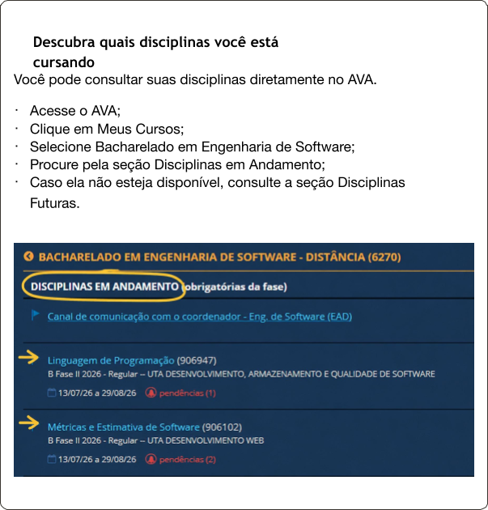

Grupo · UCFC 1
Educação
- Formação Inicial em Educação a Distância
- Pré-Cálculo
- Metodologia Científica Metodologia de Pesquisa Aplicada (grade anterior)
- Relações Étnico-Raciais
Engenharia de Software · UNINTER
Entrar na Comunidade OficialEsta comunidade foi criada para reunir estudantes de todas as grades de Engenharia de Software. Como a grade curricular do curso mudou ao longo dos anos, alunos de turmas diferentes podem cursar conteúdos semelhantes com nomes diferentes. Para facilitar a organização, os grupos da comunidade foram organizados de acordo com as UCFCs do plano de ensino atual (ano 2025 em diante), reunindo também as disciplinas equivalentes do plano anterior. Assim, independentemente do seu ano de ingresso, você encontrará facilmente o grupo correto.
Espaços fixos que todo membro encontra ao entrar na comunidade.
Seu ponto de partida na comunidade. Neste grupo você encontrará:
Canal oficial da comunidade. Aqui serão publicados comunicados importantes, atualizações, eventos, mudanças na comunidade e outras informações relevantes.
Nosso espaço de convivência. Aqui vale conversar sobre o curso, trocar experiências, compartilhar conquistas, pedir indicações de materiais, conversar sobre tecnologia ou simplesmente conhecer outros estudantes. Este grupo existe para fortalecer a comunidade.
Cada grupo representa uma UCFC (Unidade Curricular de Formação Continuada) da nova matriz curricular. Dentro de cada grupo estão reunidas:
Isso evita grupos duplicados e reúne estudantes que estudam conteúdos semelhantes.
Você pode consultar suas disciplinas diretamente no AVA:

Cada disciplina está vinculada a uma UCFC. Localize as suas na lista de grupos por ano de curso.
Os grupos reúnem alunos da grade nova e da grade anterior que estudam os mesmos conteúdos, porém com nomenclaturas diferentes.
Espaço destinado à divulgação de:
As publicações são realizadas apenas pelos administradores para evitar spam e garantir a qualidade das divulgações.
Espaço para fazer perguntas relacionadas ao curso, disciplinas, AVA, matrícula, atividades e demais assuntos acadêmicos. Todos os membros podem participar ajudando uns aos outros.
Um espaço reservado para promover acolhimento, networking e troca de experiências entre as estudantes do curso. O objetivo é fortalecer a participação feminina na tecnologia por meio de uma comunidade segura, respeitosa e colaborativa.